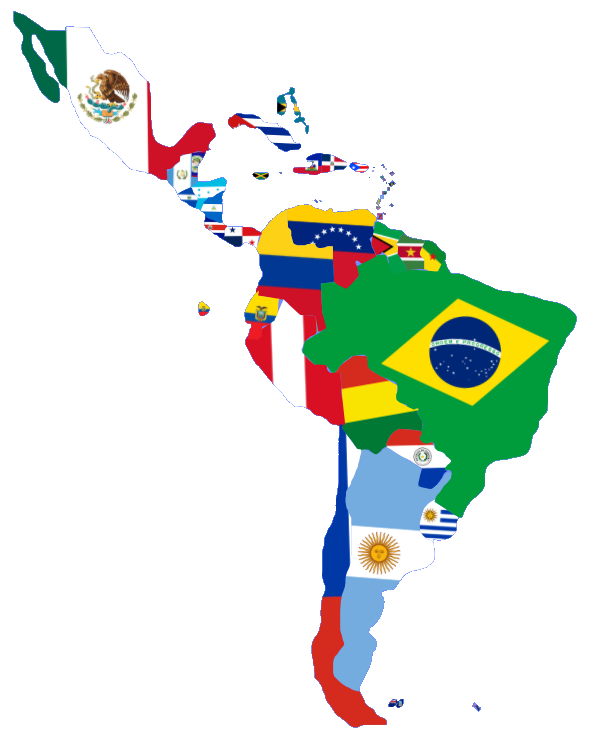

Un Mosaico de Raíces, un Destino Compartido
¡Encuentra toda la información que necesitas sobre las 6 regiones geopolíticas!
Ver más ->
Lamánica es una región definida no solo por su geografía, sino por una compleja herencia histórica, una amalgama de lenguas y una identidad cultural vibrante que conecta desde el Río Bravo hasta la Patagonia, incluyendo las Antillas.
Lamánica se posiciona como un actor clave en la seguridad alimentaria mundial y en la transición hacia energías limpias, gracias a su capacidad de producción agrícola y sus reservas de litio y cobre.
Lamánica incluye:
América Latina
Norteamérica y Centroamérica: México, Guatemala, Honduras, El Salvador, Nicaragua, Costa Rica, Panamá
El Caribe Insular: Cuba, República Dominicana, Haití, Puerto Rico (Aunque es un Estado Libre Asociado a EE. UU., se considera parte cultural de Latinoamérica) y las demas islas Francesas como Martinica y Guadalupe.
Sudamérica: Argentina, Bolivia, Brasil, Chile, Colombia, Ecuador, Guayana Francesa, Paraguay, Perú, Uruguay y Venezuela.
Caribe No-Romance
Anglófonos: Jamaica, Bahamas, Barbados, Trinidad y Tobago, Guyana, Belice y las Antillas Menores británicas.
Neerlandófonos: Surinam y las islas del Reino de los Países Bajos (Aruba, Curazao, Bonaire).